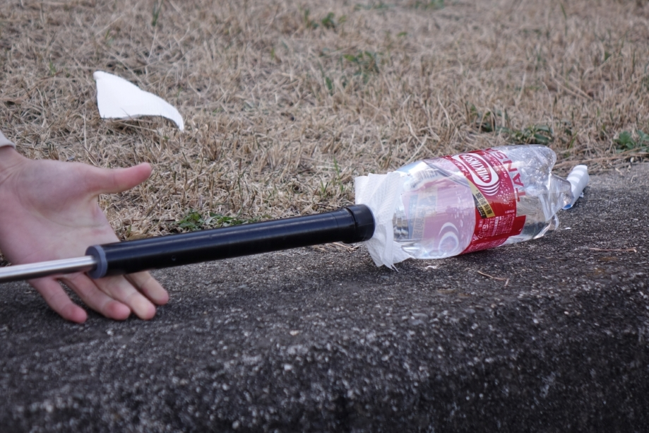

← Back to WORKS
メントスコーラコンペティション
Experimental / 2024

概要
「革新的スプラッシュ研究会」として、メントスコーラコンペティションに出場しました。単なる遊びではなく、噴射の高さや美しさを最大化するための装置開発や、最適な投入環境のシミュレーションを行いました。
流体力学（風）や化学反応の特性を考慮した「本気」の検証を重ね、コンペティションで私たちの技術成果を披露しました。
Project Specs
- Theme: Splash Dynamics
- Activity: Research & Comp
- Team: Splash Lab (Kakuken Sub-unit)